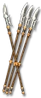

Heyday

Shieldmaiden's Toss
Maiden Javelin
Damage: 8-14
Required Level: 25
+75-100% Enhanced Weapon Damage
Adds 30-50 Damage
+1-3 to Javelin and Spear Skills
+80 Increased Stack Size
Replenishes Quantity
+25% Piercing Attack
+15 to Dexterity
+15% Deadly Strike
Unique Amazon Javelin
Shieldmaiden's Toss
- Type
- Amazon Javelin
- Base
- Maiden Javelin
- Tier
- Normal
- Required level
- 25
- Item level
- 12
- Required strength
- 33
- Required dexterity
- 47
- Max sockets
- 2
- Class
- Amazon only